수행평가 2 안내
서비스 제작 계획서(PRD)实践考核 2 说明
服务制作计划书（PRD）
PRD.md 한 편을처음 보는 사람과 AI가 이해할 수 있게 맞춰 냅니다.不交代码。把第 6~7 次课写下的那一份
PRD.md，对齐到第一次看的人和 AI 都能看懂，再提交。
무엇을 만들지는 사람들이 쓰는 한 가지에서 골랐다做什么，是从大家真正在用的那一件事里选出来的
Instagram의 처음 이름은 Burbn이었습니다. 가는 곳을 알리는 체크인, 친구와 만날 약속, 포인트, 사진 올리기까지 기능이 많은 앱이었는데, 쓰는 사람이 적었습니다. 만든 두 사람이 살펴보니 사람들은 거의 사진 기능만 쓰고 있었습니다.Instagram 最初叫 Burbn。它是一款功能很多的应用：签到告诉别人自己在哪、和朋友约见面、积分、上传照片……可是用的人很少。两位创始人一看，发现大家几乎只用照片功能。
| Burbn에 있던 것Burbn 里有的 | Instagram에 남긴 것Instagram 留下的 |
|---|---|
| 체크인 · 약속 잡기 · 포인트 · 사진签到 · 约见面 · 积分 · 照片 | 사진(필터) · 댓글 · 좋아요照片（滤镜）· 评论 · 点赞 |
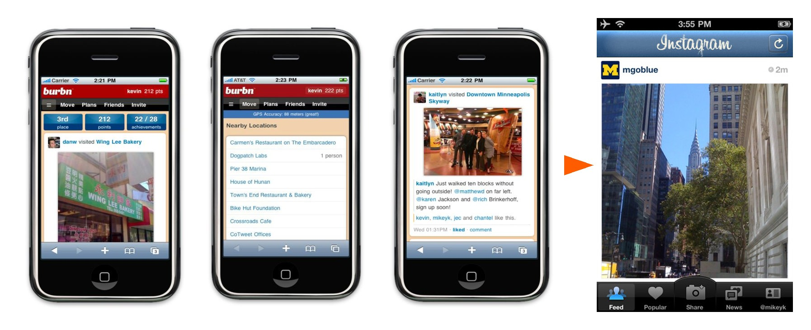
두 사람은 사진만 남기고 나머지를 지웠습니다. 2010년 10월에 Instagram으로 다시 내놓자 첫날에만 수만 명이 가입했습니다.两人只留下照片，把其余的都删了。2010 年 10 月以 Instagram 的名字重新推出后，光第一天就有几万人注册。
만들 것을 고르는 기준은 내가 넣고 싶은 기능이 아니라 사용자가 정말 쓰는 한 가지입니다. PRD 1항(해결하려는 필요)과 2항(가장 중요한 기능)이 바로 이 선택을 적는 자리입니다.选定做什么的标准，不是自己想加的功能，而是用户真正在用的那一件事。PRD 第 1 项（想解决的需求）和第 2 项（最重要的功能）正是写下这个选择的地方。
PRD의 시작은 공책 한 장이었다PRD 的开始，是笔记本上的一页
아래 그림은 Twitter를 만든 Jack Dorsey가 2000년 무렵 공책에 그린 기획 메모입니다. 코드는 한 줄도 없고, 「지금 내가 무엇을 하는지 짧게 적어 친구들에게 보여 준다」는 생각 하나와 그 화면만 있습니다. 칸에 지금 상태(reading)를 적고 Set을 누르면, 아래에 「in bed」, 「going to park」 같은 상태가 쌓입니다.下图是 Twitter 的创始人 Jack Dorsey 大约在 2000 年画在笔记本上的规划笔记。上面一行代码都没有，只有一个想法——“把我现在在做什么简短地写下来给朋友看”——和那个画面。在框里写下现在的状态（reading），按 Set，下面就会积累“in bed”“going to park”这样的状态。
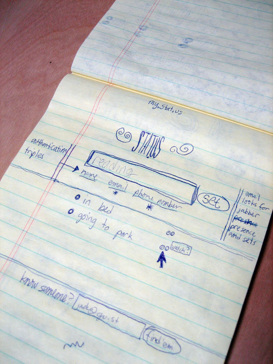
누가 쓰는가(1항), 핵심 기능 하나(2항), 화면에 무엇이 보이는가(4항)가 이 한 장에 다 있습니다. 무엇 하나를 하는 서비스인지가 분명하면 됩니다.谁来用（第 1 项）、一个核心功能（第 2 项）、画面上看到什么（第 4 项），这一页上全都有。只要清楚这是做哪一件事的服务就够了。
Airbnb의 첫 발표 자료에는 우리 PRD와 목업이 다 있었다Airbnb 的第一份路演资料里，有我们的 PRD 和模型
2008년, 지금의 Airbnb가 「AirBed&Breakfast」라는 이름으로 투자를 받으려고 만든 14장짜리 슬라이드입니다. 그중 네 장은 우리 PRD, 6-2에서 만든 목업과 거의 같습니다. 그리고 네 장이 서로 맞습니다. Problem의 사람이 Solution의 사용자이고, 그 기능이 Product 화면 순서대로 나옵니다.这是 2008 年，现在的 Airbnb 以“AirBed&Breakfast”的名字为了拉投资做的 14 页幻灯片。其中四页和我们的 PRD、6-2 做的模型几乎一样。而且四页彼此吻合：Problem 里的人就是 Solution 的用户，那些功能按 Product 的画面顺序出现。
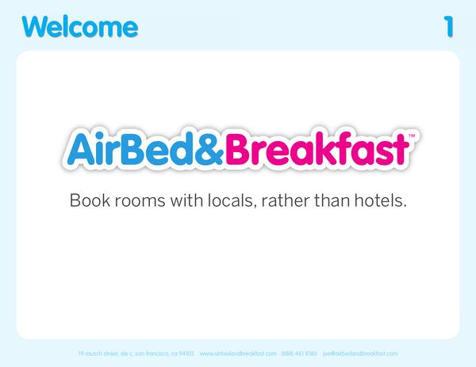 | 1 · Welcome → 1항 한 문장 소개第 1 项 一句话简介 「호텔 대신 현지인의 방을 예약한다.」 서비스를 한 문장으로 말한다.“不住酒店，订当地人的房间。”用一句话说清服务。 |
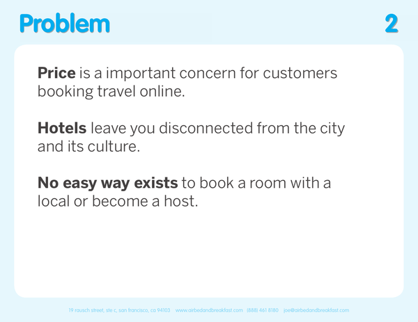 | 2 · Problem → 1항 해결하려는 필요第 1 项 想解决的需求 여행자는 숙박비가 걱정이다. 호텔에 묵으면 그 도시와 문화에서 떨어진다. 현지인의 방을 빌리거나 빌려줄 쉬운 방법이 없다.旅行者担心住宿费。住酒店就和那座城市、那里的文化隔开了。没有简单的办法租当地人的房间或把房间租出去。 |
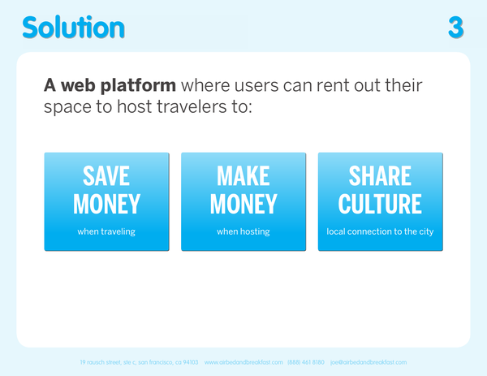 | 3 · Solution → 1항 사용자 · 2항 핵심 기능第 1 项 用户 · 第 2 项 核心功能 남는 방을 여행자에게 빌려주는 웹 서비스. 여행자는 돈을 아끼고, 집주인은 돈을 벌고, 둘은 문화를 나눈다.把空房间租给旅行者的网页服务。旅行者省钱，房东赚钱，双方交流文化。 |
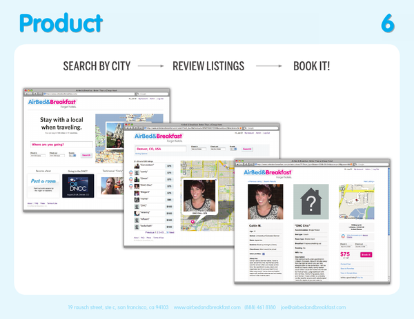 | 6 · Product → 3항 흐름 · 4항 화면 · 목업第 3 项 流程 · 第 4 项 画面 · 模型 도시로 찾기 → 숙소 살펴보기 → 예약하기. 세 단계를 실제 웹 화면으로 보여 준다. 6-2에서 PRD를 보고 만든 목업과 같은 일이다.按城市搜索 → 查看房源 → 预订。用真实网页画面展示这三步。和 6-2 照着 PRD 做的模型是同一件事。 |
나머지 열 장 ① 원하는 사람이 많은가, 돈을 버는가其余十页 ① 想要的人多吗，能赚钱吗
나머지 열 장은 우리 PRD에 없는 내용입니다. 서비스가 무엇을 하는지가 아니라, 이 서비스로 회사를 꾸릴 수 있는지를 보여 줍니다. 먼저 네 장은 시장과 돈입니다.其余十页是我们的 PRD 里没有的内容。它们展示的不是服务做什么，而是能不能靠这个服务办成公司。先看讲市场和钱的四页。
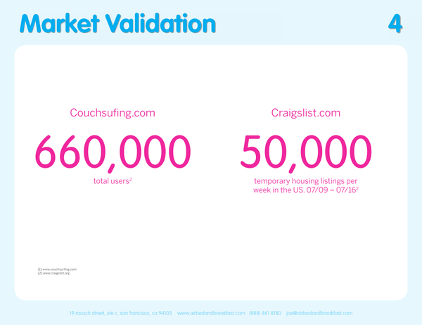 | 4 · Market Validation 이미 비슷한 것을 쓰는 사람이 있다는 증거. Couchsurfing 이용자 66만 명, Craigslist에 올라오는 단기 임대 글 일주일에 5만 개.证明已经有人在用类似的东西。Couchsurfing 有 66 万用户，Craigslist 上的短租帖子每周 5 万条。 |
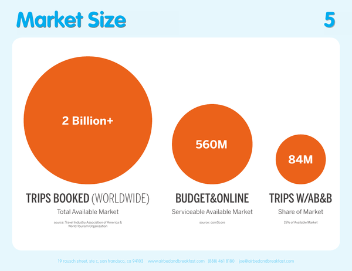 | 5 · Market Size 세계 여행 예약 20억 건 이상 → 싸게 온라인으로 하는 예약 5.6억 건 → 그중 15%인 8,400만 건을 목표로 잡는다.全球旅行预订 20 亿次以上 → 便宜且在线的预订 5.6 亿次 → 目标是其中 15%，即 8400 万次。 |
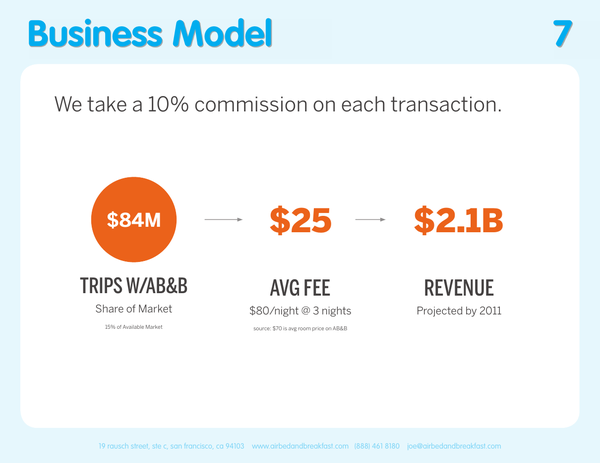 | 7 · Business Model 예약마다 10% 수수료. 하룻밤 80달러 × 3박이면 한 번에 약 25달러. 목표 8,400만 건이면 매출 21억 달러.每笔预订收 10% 手续费。每晚 80 美元 × 3 晚，一次约 25 美元。按 8400 万次算，收入 21 亿美元。 |
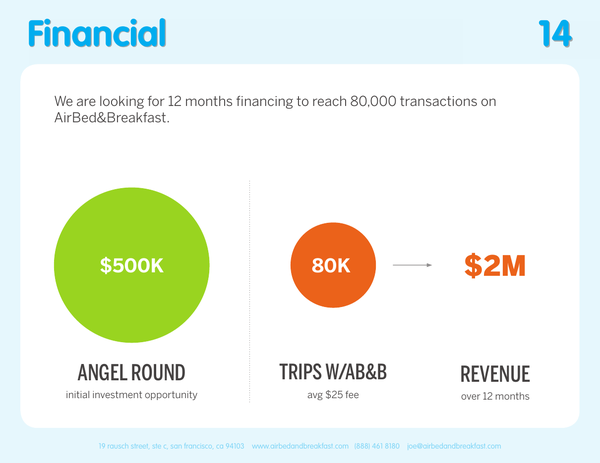 | 14 · Financial 50만 달러를 투자받아, 12개월 동안 거래 8만 건 · 매출 200만 달러를 노린다.融资 50 万美元，争取 12 个月内 8 万笔交易、200 万美元收入。 |
나머지 열 장 ② 처음 쓸 사람을 어떻게 모으나其余十页 ② 怎么招来第一批用户
좋은 서비스라도 아무도 모르면 쓰지 않습니다. 다음 세 장은 처음 쓸 사람을 모으고, 믿게 만드는 방법입니다.再好的服务，没人知道也不会有人用。下面三页讲怎么招来第一批用户，并让他们信任。
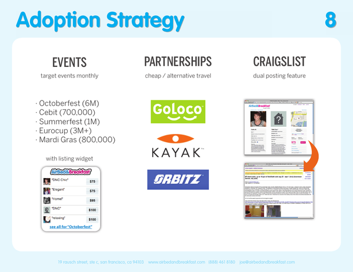 | 8 · Adoption Strategy 큰 행사 때 숙소가 모자라는 도시를 노린다(옥토버페스트 600만 명 등). GoLoco · Kayak · Orbitz 같은 여행 사이트와 손잡고, Craigslist에도 함께 올린다.瞄准大型活动期间住处紧张的城市（如啤酒节 600 万人）。和 GoLoco · Kayak · Orbitz 等旅行网站合作，也同时发到 Craigslist。 |
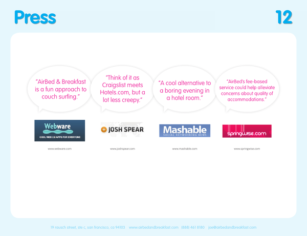 | 12 · Press 신문과 블로그에 실린 기사를 모아 보여 준다. 한 기사는 「Craigslist와 Hotels.com을 합친 것, 그런데 훨씬 덜 꺼림칙한」 서비스라고 했다.把报纸和博客的报道放在一起展示。有一篇说它是“Craigslist 加 Hotels.com，但让人放心得多”的服务。 |
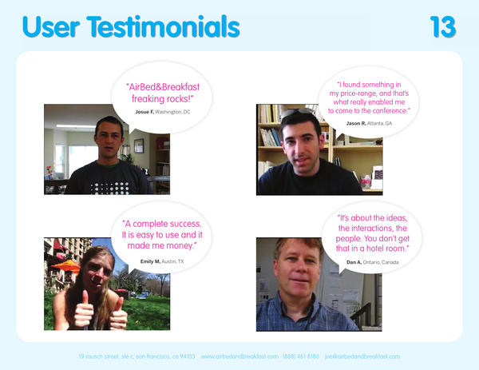 | 13 · User Testimonials 실제로 써 본 이용자 네 명의 후기. 써 본 사람의 말로 믿음을 얻는다.四位真实用户的评价。用用过的人的话赢得信任。 |
나머지 열 장 ③ 누구와 겨루고, 누가 만드나其余十页 ③ 和谁竞争，谁来做
마지막 세 장은 비슷한 서비스와 비교해 무엇이 나은지 보여 줍니다. 그리고 이 일을 해낼 사람이 누구인지 소개합니다.最后三页展示和相似服务相比强在哪里。然后介绍谁能把这件事做成。
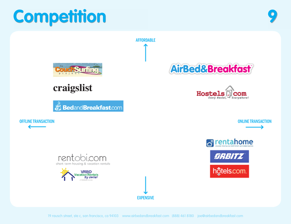 | 9 · Competition 가격(싸다 ↔ 비싸다)과 거래 방식(직접 ↔ 온라인) 두 축에 Couchsurfing, Craigslist, 호텔 예약 사이트 등을 놓는다. 자기 자리는 「싸고, 온라인으로 거래되는」 칸이다.在价格（便宜 ↔ 贵）和交易方式（线下 ↔ 线上）两条轴上放 Couchsurfing、Craigslist、酒店预订网站等。自己的位置是“便宜、在线交易”那一格。 |
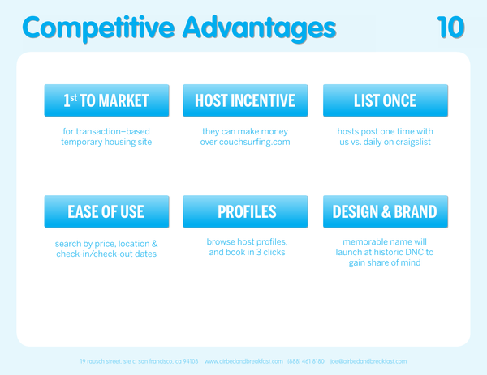 | 10 · Competitive Advantages 남보다 나은 점 여섯 가지. 거래형 단기 숙소로는 처음, 집주인에게 돈이 생김, 한 번 올리면 끝, 쓰기 쉬움, 프로필, 디자인과 브랜드.比别人强的六点：第一个按交易收费的短租住处、房东有收入、发布一次就行、容易使用、个人资料、设计与品牌。 |
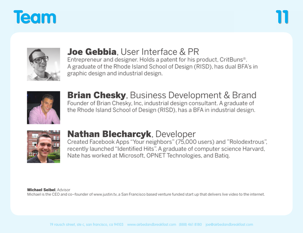 | 11 · Team 디자이너 Joe Gebbia · Brian Chesky, 개발자 Nathan Blecharczyk, 조언자 Michael Seibel. 만드는 사람을 소개한다.设计师 Joe Gebbia · Brian Chesky，开发者 Nathan Blecharczyk，顾问 Michael Seibel。介绍做的人。 |
서비스 하나를 내놓는 일은 여러 일이 합쳐진 일이다推出一个服务，是许多工作合在一起的工作
Airbnb의 14장을 하는 일로 나눠 보면, PRD에 해당하는 기획은 그중 한 갈래입니다. 시장을 조사하고, 사람을 모으는 마케팅과 다른 회사와 손잡는 영업을 하고, 경쟁자를 살피고, 돈을 계산하는 일이 함께 있습니다. 서비스는 이 일들이 다 맞물려야 세상에 나옵니다.把 Airbnb 的 14 页按工作分开，相当于 PRD 的规划只是其中一类。还有调查市场、招用户的营销、和别的公司合作的销售、研究竞争对手、算钱的工作。这些工作全都咬合在一起，服务才能推出。
| 일의 갈래工作类别 | Airbnb가 한 일Airbnb 做了什么 | 슬라이드幻灯片 |
|---|---|---|
| 기획规划 | 누구의 무슨 문제를, 어떤 기능으로 푸는가替谁解决什么问题，用什么功能 | 1 · 2 · 31 · 2 · 3 |
| 디자인 · 개발设计 · 开发 | 실제로 쓸 수 있는 화면을 만든다做出真正能用的画面 | 6 · 116 · 11 |
| 시장 조사市场调查 | 원하는 사람이 얼마나 되는지 숫자로 보인다用数字说明想要的人有多少 | 4 · 54 · 5 |
| 마케팅 · 홍보营销 · 宣传 | 행사를 노리고, 기사와 후기로 알린다瞄准活动，用报道和评价宣传 | 8 · 12 · 138 · 12 · 13 |
| 영업 · 제휴销售 · 合作 | 여행 사이트와 손잡고 사용자를 데려온다和旅行网站合作带来用户 | 88 |
| 경쟁 분석竞争分析 | 비슷한 서비스와 비교해 나은 점을 찾는다和相似服务比较，找出强项 | 9 · 109 · 10 |
| 재무 · 투자财务 · 融资 | 어떻게 벌고, 얼마를 받아 시작하는가怎么赚钱，拿多少钱起步 | 7 · 147 · 14 |
회사에서는 이 갈래마다 맡은 사람이 따로 있고, 모두 같은 기획을 보고 움직입니다. 그래서 기획이 흔들리면 마케팅도 영업도 같이 흔들립니다. 오늘 수행평가는 그 첫 갈래, 곧 1~6항이 서로 맞는지를 봅니다.在公司里，每一类都有专人负责，大家都照着同一份规划行动。所以规划一动摇，营销和销售也跟着动摇。今天的实践考核看的就是这第一类，也就是第 1~6 项是否彼此吻合。
설계도가 서로 맞지 않으면 집도 맞지 않는다设计图彼此对不上，房子也对不上
집을 짓기 전에는 설계도를 그립니다. 설계도의 한 장에는 2층으로 올라가는 계단이 있는데 다른 장에는 2층에 문이 없다면, 그대로 지은 집의 계단은 벽에 막힙니다. 한 장 한 장은 잘 그렸어도 서로 맞지 않으면 집이 되지 않습니다.盖房子之前要先画设计图。设计图的一张上有通往二楼的楼梯，另一张上二楼却没有门，那么照着盖出来的房子，楼梯就会撞到墙上。每一张都画得再好，彼此对不上，就成不了一座房子。
9회부터 AI는 여러분의 PRD를 읽고 서비스를 만듭니다. 3항 사용 흐름에는 「지난 기록을 본다」가 있는데 5항에 기억할 기록이 없다면, AI가 만든 서비스도 그 자리에서 막힙니다. 오늘 수행평가 2는 일곱 항목이 서로 맞는지를 봅니다.从第 9 次课起，AI 会读你的 PRD 来做服务。第 3 项使用流程里写了“查看以往记录”，第 5 项却没有要记住的记录，那么 AI 做出的服务也会卡在那里。今天的实践考核 2，看的就是七个项目是否彼此吻合。
무엇을 평가하고, 무엇을 평가하지 않는가评价什么，不评价什么 핵심核心
이번 수행평가에서는 코드를 쓰지 않고, 실행되는 서비스도 만들지 않습니다. 6~7회에 쓴 PRD.md를 처음부터 읽고 서로 맞게 다듬어 냅니다. 전문 기획자처럼 길고 어려운 문서를 쓰는 것이 목표가 아닙니다. 짧아도 항목끼리 맞고, 내가 그 뜻을 설명할 수 있으면 됩니다.这次实践考核不写代码，也不做能运行的服务。把第 6~7 次课写的 PRD.md 从头读一遍，打磨到彼此吻合，作为一个文件提交。目标不是像专业策划那样写又长又难的文档。哪怕短，只要各项彼此吻合、自己能讲清它的意思就行。
- 사용자·상황·목적과 핵심 기능이 서로 맞는가用户、情境、目的与核心功能是否彼此吻合
- 사용 흐름과 화면 설명이 같은 순서로 이어지는가使用流程与画面说明是否按同样的顺序连着
- 기억할 기록이 생기는 순간과 다시 보는 순간이 있는가有没有要记住的记录产生的时刻与再看的时刻
- 완성 기준을 눈으로 확인할 수 있는가完成标准能不能用眼睛确认
- AI의 의견과 내 판단을 나눠 적었는가是否把 AI 的意见和自己的判断分开写了
- 코드를 쓰는 능력写代码的能力
- 전문 용어를 얼마나 썼는가用了多少专业术语
- 기능·화면·테이블의 개수功能、画面、数据表的数量
- 문서의 길이文档的长度
- 그림과 디자인图与设计
수행평가 1에서 정확한 그래프 한 개가 여러 개보다 낫다고 했습니다. 이번에도 서로 맞는 짧은 PRD가 길지만 어긋난 PRD보다 낫습니다.实践考核 1 说过，准确的一张图胜过很多张。这次也一样，彼此吻合的短 PRD，胜过冗长却错位的 PRD。
점수는 세 영역으로 매긴다分数按三个领域打 핵심核心
수행평가 2는 100점이고, 학기 성적에 30%로 들어갑니다. 아래 표는 교수학습·평가계획에 적힌 세 영역과 가장 높은 점수의 기준입니다. 오른쪽 칸은 그 영역을 PRD의 몇 항에서 보는지 알려 줍니다.实践考核 2 满分 100 分，按 30% 计入学期成绩。下表是教学与评价计划里写的三个领域，以及最高分的标准。右边一栏告诉你这个领域在 PRD 的第几项里看。
| 영역领域 | 가장 높은 점수를 받는 경우拿最高分的情况 | PRDPRD |
|---|---|---|
| 서비스 기획과 사용자 흐름 · 40점服务规划与用户流程 · 40 分 | 사용자·상황·목적·핵심 기능이 서로 맞고, 대표 흐름을 시작 → 행동 → 결과 순으로 쓰며, 화면 설명이 흐름과 같다.用户、情境、目的、核心功能彼此吻合；代表性流程按开始 → 行动 → 结果的顺序写；画面说明与流程一致。 | 1 · 2 · 3 · 4항第 1 · 2 · 3 · 4 项 |
| 데이터 계획과 완성 기준 · 30점数据计划与完成标准 · 30 分 | 의미 있는 기록, 그 기록이 생기고 다시 보이는 순간, 후보 테이블의 역할을 잇고, 완성 기준을 사용자의 행동과 눈에 보이는 결과로 쓴다.把有意义的记录、它产生与再次出现的时刻、候选数据表的作用连起来；完成标准写成用户的行为与看得见的结果。 | 5 · 6항第 5 · 6 项 |
| AI 활용과 학생 판단 · 30점AI 运用与学生判断 · 30 分 | AI의 제안을 받아들이거나 거절한 내용과 이유, 내가 직접 정한 부분을 구체적으로 쓴다.具体写出接受或拒绝 AI 提议的内容与理由，以及自己亲自决定的部分。 | 7항 · 대화 기록第 7 项 · 对话记录 |
수행평가 1(30%) · 2(30%) · 3(40%)을 더해 40점 이상이면 이수입니다. 다른 학생과 비교하지 않습니다. 어려운 부분은 AI나 선생님의 도움을 받아도 되지만, 최종 내용은 내가 읽고 설명할 수 있어야 합니다.实践考核 1（30%）· 2（30%）· 3（40%）加起来，40 分以上就通过。不和其他同学比较。吃力的部分可以借助 AI 或老师，但最终内容要自己能读懂、讲清楚。
요구하지 않는 것은 쓰지 않는다不要求的就不写
아래 내용은 이번 평가에서 요구하지도 채점하지도 않습니다. 대부분 안 배운다는 뜻이 아니라, 실제 화면과 데이터를 보기 전에는 정할 수 없어서 나중에 하는 것입니다. 쓰느라 시간을 쓰지 말고, AI가 넣었다면 지웁니다.下面这些内容这次既不要求也不评分。大多不是不学，而是在看到真正的画面和数据之前定不了，所以以后再做。不要花时间去写；要是 AI 放进去了，就删掉。
| 요구하지 않는 것不要求的 | 언제 다루나什么时候做 |
|---|---|
| 실행되는 화면·서버 코드能运行的画面、服务器代码 | 9~13회 개발第 9~13 次课的开发 |
| 그림·손그림·디자인 시안, 색과 글꼴图片、手绘、设计稿，颜色与字体 | 개발할 때 AI와 함께开发时和 AI 一起 |
| SQL 문장, ERD, 자료형 설계SQL 语句、ERD、数据类型设计 | 11회 SQLite에서 AI가 제안, 내가 확인第 11 次课 SQLite 时由 AI 提议，自己确认 |
| 프레임워크·서버·배포 방식框架、服务器、发布方式 | 10회 표준 프로젝트에서 준비됨第 10 次课的标准项目里已准备好 |
| 시장조사·사업 계획市场调查、商业计划 | 이 수업에서 다루지 않음这门课不涉及 |
7-2에서 5항에 넣은 표는 그대로 두어도 됩니다. 다만 열 이름·기본키·외래키는 점수에 들어가지 않고, 표 아래의 해설(무엇을 기억하는지, 언제 생기고 언제 다시 보는지)을 봅니다. 테이블이 하나여도 충분합니다.7-2 放进第 5 项的表可以留着。不过列名、主键、外键不计分，看的是表下面的说明（记住什么、什么时候产生、什么时候再看）。只有一张表也够。
06 폴더를 ZIP 하나로 묶어 낸다把 06 文件夹打包成一个 ZIP 提交 핵심核心
제출물은 06 폴더 전체를 묶은 ZIP 하나입니다. 그 안에 PRD.md, 8-2를 시작할 때 AI가 만드는 대화 기록 AI대화기록.md, 6-2에서 만든 mockup 폴더가 다 들어 있습니다. 안의 파일 이름은 바꾸지 않고, 8-2 끝에서 ZIP에만 정해진 이름을 붙입니다.提交物是把整个 06 文件夹打包成的一个 ZIP。里面有 PRD.md、8-2 开始时 AI 建的对话记录 AI대화기록.md，以及 6-2 做的 mockup 文件夹。里面的文件不改名，只在 8-2 最后给 ZIP 起规定的名字。
08_assessment2_학생ID_이름.zip └─ 06/ ├─ PRD.md ├─ AI대화기록.md └─ mockup/index.html 예) 08_assessment2_260701_홍길동.zip
08_assessment2_학생ID_이름.zip └─ 06/ ├─ PRD.md ├─ AI대화기록.md └─ mockup/index.html （学生ID、姓名换成自己的） 例）08_assessment2_260701_홍길동.zip
- ZIP 하나만 낸다. 파일을 따로따로 올리지 않는다.只交一个 ZIP。不要把文件一个个分开上传。
- ZIP 안의 파일 이름은 바꾸지 않는다. 9회에
06폴더를 그대로 이어서 쓴다.ZIP 里的文件名不改。第 9 次课会直接接着用06文件夹。 - 양식은 내 서비스에 맞게 바꿔도 된다. 쓸 것이 없는 칸은
없음이라고 적는다.样式可以按自己的服务修改。没有可写的栏目就写없음（无）。 - PRD 맨 위의 학생 ID와 이름을 ZIP 이름과 똑같이 적는다. 실제 개인정보와 다른 학생의 작업물은 넣지 않는다.PRD 最上面的学生 ID 与姓名，要和 ZIP 的名字写得一模一样。不放真实个人信息，也不放其他同学的作业。
수행평가 1처럼 Google Form에 파일을 올립니다. 파일을 올리려면 Google 계정 로그인이 필요하니, 8-2가 시작되기 전에 브라우저에서 로그인해 둡니다.和实践考核 1 一样，把文件上传到 Google 表单。上传文件需要登录 Google 账号，请在 8-2 开始之前先在浏览器里登录好。
06 폴더를 열고 PRD.md를 미리 보기로 읽는다打开 06 文件夹，用预览读 PRD.md
평가에서 무엇을 보는지 알았으니 이제 내 PRD를 엽니다. 6~7회에 쓰던 06 폴더를 VS Code로 열고, PRD.md를 미리 보기로 펼칩니다. 고치기 전에 먼저 처음부터 끝까지 한 번 읽는 것이 오늘의 첫 일입니다.知道了评价看什么，现在打开自己的 PRD。用 VS Code 打开第 6~7 次课用的 06 文件夹，再用预览展开 PRD.md。改之前先从头到尾读一遍，是今天的第一件事。
- 파일 탐색기에서
JDH_VibeCoding_자기이름안의06폴더를 마우스 오른쪽 단추로 누르고 Code(으)로 열기를 고른다.在文件资源管理器里，右键单击JDH_VibeCoding_자기이름里的06文件夹，选择 Code(으)로 열기（用 Code 打开）。 - VS Code 왼쪽 탐색기 맨 위에
06이 보이는지 확인한다.确认 VS Code 左边资源管理器的最上面显示06。 PRD.md를 누른 뒤Ctrl+Shift+V로 미리 보기를 연다.点开PRD.md，按Ctrl+Shift+V打开预览。- 1항부터 7항까지 끝까지 읽는다. 아직 고치지 않는다.从第 1 项读到第 7 项。先不要改。
| 미리 보기에서 보이는 것在预览里看到的 | 뜻意思 |
|---|---|
| 굵고 큰 1. 서비스 기본 정보 ~ 7. AI 사용과 학생의 판단又粗又大的 1. 服务基本信息 ~ 7. AI 的使用与学生的判断 | 양식의 일곱 항목. 필요하면 내 서비스에 맞게 바꿔도 된다样式的七个项目。需要的话可以按自己的服务修改 |
| 5항 안의 표第 5 项里的表 | 7-2에서 넣은 후보 테이블. 표 아래에 해설이 있어야 한다7-2 放进的候选数据表。表下面要有说明 |
빈칸과 「(확인 필요)」부터 찾는다先找空白和「(需要确认)」
6-2와 7-2에서 AI에게 PRD를 옮기게 할 때, 모르는 내용은 지어내지 말고 「(확인 필요)」라고 적으라고 했습니다. 그 표시가 남아 있으면 아직 내가 정하지 않은 곳입니다. 8-2에서 서로 맞추기 전에, 비어 있는 곳부터 채워 두면 시간이 남습니다.在 6-2 和 7-2 让 AI 誊写 PRD 时，说过不知道的内容不要编，要写「(需要确认)」。这个标记还在，就是自己还没决定的地方。在 8-2 对齐之前，先把空着的地方填好，时间就会有富余。
Ctrl+F를 누르고확인 필요를 입력한다. 오른쪽에 몇 개인지 숫자가 나온다.按Ctrl+F，输入확인 필요（当时用中文请求的话，输入需要确认）。右边会显示有几处。- 하나씩 내려가며 그 자리를 내 말로 채운다. 표시는 지운다.逐个往下看，用自己的话填好那个地方，再删掉标记。
- 같은 방법으로
___(밑줄 빈칸)도 찾아 채운다.用同样的方法，找出___（下划线空白）并填好。 - 이름:처럼 콜론 뒤가 비어 있는 줄이 있으면 채우거나없음이라고 적는다.像- 이름:这样冒号后面空着的行，要么填上，要么写없음（无）。Ctrl+S로 저장한다. 탭 옆의 ●가 없어지면 저장된 것이다.按Ctrl+S保存。标签页旁的 ● 消失就是存好了。
항목끼리 맞는지 보고 고치는 일은 8-2에서 순서대로 합니다. 여기서 서비스를 바꾸거나 새 기능을 넣지 않습니다.看各项是否吻合并修改，是 8-2 按顺序做的事。这里不换服务，也不加新功能。
이럴 때는 이렇게 한다遇到这些情况这样做 필요할 때需要时
파일을 여는 데서 막히는 자리는 대개 비슷합니다. 내 상황과 같은 줄을 찾아 오른쪽대로 해 봅니다. 8-2가 시작되기 전에 해결해야 하니, 안 되면 바로 손을 듭니다.打开文件时卡住的地方大多差不多。找到和自己情况一样的那一行，照右边做。要在 8-2 开始前解决，所以不行就马上举手。
06 폴더나 PRD.md가 없다 (결석·분실)没有 06 文件夹或 PRD.md（缺席或丢失） | 6-1 교과서의 06 학생용 자료 내려받기 버튼으로 다시 받습니다. 빈 양식이 들어 있으니 지금부터 1~7항을 채우고 선생님께 알립니다.用 6-1 教材的下载 06 学生资料按钮重新下载。里面是空白样式，从现在起填第 1~7 项，并告诉老师。 |
| 오른쪽 클릭 메뉴에 Code(으)로 열기가 없다右键菜单里没有 Code(으)로 열기（用 Code 打开） | VS Code를 먼저 켜고 File → Open Folder로 06 폴더를 고릅니다.先打开 VS Code，用 File → Open Folder 选 06 文件夹。 |
탐색기 맨 위가 06이 아니다资源管理器最上面不是 06 | 다른 폴더를 연 것입니다. File → Open Folder로 06을 다시 엽니다.是打开了别的文件夹。用 File → Open Folder 重新打开 06。 |
Ctrl+Shift+V를 눌러도 미리 보기가 안 열린다按了 Ctrl+Shift+V 也打不开预览 | PRD.md 탭을 한 번 누른 뒤 다시 누릅니다. 탐색기에서 오른쪽 클릭 → 미리보기 열기도 됩니다.先点一下 PRD.md 标签页再按。也可以在资源管理器里右键 → 미리보기 열기（打开预览）。 |
| 「(확인 필요)」가 열 개가 넘는다「(需要确认)」超过十处 | 핵심 기능이 있는 2·3·4항부터 채웁니다. 나머지는 8-2에서 이어서 해도 됩니다.先填有核心功能的第 2·3·4 项。其余的可以在 8-2 接着做。 |
저장하고 바로 8-2로 간다保存，马上进入 8-2
오늘은 수행평가 2가 무엇을 보는지 읽고, 내 PRD.md를 열어 빈칸과 「(확인 필요)」를 채웠습니다. 다음 차시는 바로 이어지는 평가 시간입니다. 열어 둔 VS Code를 닫지 말고 그대로 8-2로 넘어갑니다.今天读了实践考核 2 看什么，又打开自己的 PRD.md，填好了空白和「(需要确认)」。下一课时就是紧接着的评价时间。打开着的 VS Code 不要关，直接进入 8-2。
- 수행평가 2는 일곱 항목이 서로 맞는지를 본다. 길이·용어 수·기능 개수는 보지 않는다.实践考核 2 看的是七个项目是否彼此吻合。不看长度、术语数量、功能个数。
- 점수는 기획과 흐름 40 · 데이터와 완성 기준 30 · AI 활용과 판단 30.分数：规划与流程 40 · 数据与完成标准 30 · AI 运用与判断 30。
- 제출은
06폴더를 묶은 ZIP 하나. 안의 파일 이름은 그대로 두고, ZIP에만08_assessment2_학생ID_이름.zip이라는 이름을 붙인다.提交的是把06文件夹打包的一个 ZIP。里面的文件名不变，只给 ZIP 起名08_assessment2_학생ID_이름.zip。 - SQL·코드·ERD·그림은 넣지 않는다. 5항의 표는 두어도 되고, 평가는 해설을 본다.不放 SQL、代码、ERD、图片。第 5 项的表可以留着，评价看说明。
8-2에서는 항목을 차례로 맞추고, AI에게 서로 맞지 않는 곳을 질문하게 한 뒤, 고칠지 말지를 내가 정해 7항에 적고 제출합니다.8-2 里按顺序对齐各项，让 AI 就彼此对不上的地方提问，再由自己决定改不改、写进第 7 项，然后提交。
8-2. 수행평가 2 · PRD 완성·제출 →8-2. 实践考核 2 · 完成并提交 PRD →